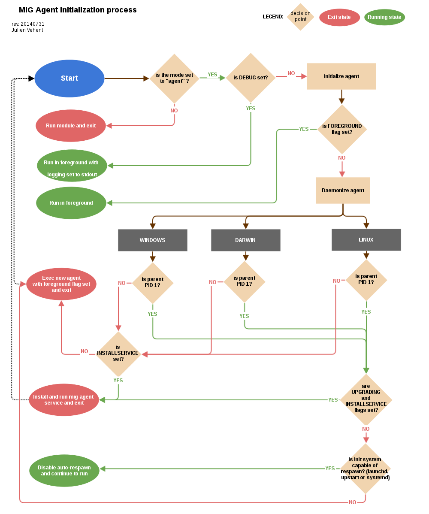

The agent tries to be as autonomous as possible. One of the goal is to ship agents without requiring external provisioning tools, such as Chef or Puppet. Therefore, the agent attempts to install itself as a service, and also supports a builtin upgrade protocol (described in the next section).
As a portable binary, the agent needs to detect the type of operating system and init method that is used by an endpoint. Depending on the endpoint, different initialization methods are used. The diagram below explains the decision process followed by the agent.
Go does not provide support for running programs in the backgroud. On endpoints that run upstart, systemd (linux) or launchd (darwin), this is not an issue because the init daemon takes care of running the agent in the background, rerouting its file descriptors and restarting on crash. On Windows and System-V, however, the agent daemonizes by forking itself into foreground mode, and re-forking itself on error (such as loss of connectivity to the relay). On Windows and System-V, if the agent is killed, it will not be restarted automatically.
The initialization process goes through several environment detection steps which are used to select the proper init method. Once started, the agent will send a heartbeat to the public relay, and also store that heartbeat in its run directory. The location of the run directory is platform specific.
windows: C:Windows
darwin: /Library/Preferences/mig/
linux: /var/run/mig/
Below is a sample heartbeat message from a linux agent stored in /var/run/mig/mig-agent.ok.
{
"destructiontime": "0001-01-01T00:00:00Z",
"environment": {
"arch": "amd64",
"ident": "Red Hat Enterprise Linux Server release 6.5 (Santiago)",
"init": "upstart"
},
"heartbeatts": "2014-07-31T14:00:20.00442837-07:00",
"name": "someserver.example.net",
"os": "linux",
"pid": 26256,
"queueloc": "linux.someserver.example.net.5hsa811oda",
"starttime": "2014-07-30T21:34:48.525449401-07:00",
"version": "201407310027+bcbdd94.prod"
}In infrastructure where running the agent as a permanent process is not acceptable, it is possible to run the agent as a cron job. By starting the agent with the flag -m agent-checkin, the agent will connect to the configured relay, retrieve and run outstanding commands, and exit after 10 seconds of inactivity.
Upon processing of an action, the scheduler will retrieve a list of agents to send the action to. One action is then derived into multiple commands and sent to agents.
An agent receives a command from the scheduler on its personal AMQP queue (1). It parses the command (2) and extracts all of the operations to perform. Operations are passed to modules and executed in parallel (3). Rather than maintaining a state of the running command, the agent create a goroutine and a channel tasked with receiving the results from the modules. Each modules published its results inside that channel (4). The result parsing goroutine receives them, and when it has received all of them, populates the results (5) array of the command with the results from each module, and send the command back to the scheduler(6).
When the agent is done running the command, both the channel and the goroutine are destroyed.
+-------+ [ - - - - - - A G E N T - - - - - - - - - - - - ]
|command|+---->(listener)
+-------+ |(2)
^ V
|(1) (parser)
| + [ m o d u l e s ]
+---------+ | (3)|----------> op1 +----------------+
|SCHEDULER|+---+ |------------> op2 +--------------|
| |<---+ |--------------> op3 +------------|
+---------+ | +----------------> op4 +----------+
| V(4)
|(6) (receiver)
| |
| V(5)
+ (publisher)
+-------+ /
|results|<-----------------------------------------'
+-------+The command received by the agent is composed of a copy of the action described previously, but signed with the private key of a trusted investigator. It also contains additional parameters that are specific to the targetted agent, such as command processing timestamps, name of the agent queue on the message broker, action and command unique IDs and status and results of the command. Below is an command derived from the root password checking action, and ran on the host named 'host1.example.net'.
{
"id": 1.427392971126604e+18,
"action": { ... SIGNED COPY OF THE ACTION ... },
"agent": {
"id": 1.4271760437936648e+18,
"name": "host1.example.net",
"queueloc": "linux.host1.example.net.981alsd19aos1984",
"mode": "daemon",
"version": "20150324+0d0f88c.prod"
},
"status": "success",
"results": [
{
"foundanything": true,
"success": true,
"elements": {
"root_passwd_hashed_or_disabled": [
{
"file": "/etc/shadow",
"fileinfo": {
"lastmodified": "2015-02-07 01:51:07.17850601 +0000 UTC",
"mode": "----------",
"size": 1684
},
"search": {
"contents": [
"root:(\\*|!|\\$(1|2a|5|6)\\$).+"
],
"options": {
"matchall": false,
"matchlimit": 0,
"maxdepth": 0
},
"paths": [
"/etc"
]
}
}
]
},
"statistics": {
"exectime": "2.017849ms",
"filescount": 1,
"openfailed": 0,
"totalhits": 1
},
"errors": null
}
],
"starttime": "2015-03-26T18:02:51.126605Z",
"finishtime": "2015-03-26T18:03:00.671232Z"
}The results of the command show that the file '/etc/shadow' has matched, and thus "FoundAnything" returned "True".
The invocation of the file module has completed successfully, which is represented by results->0->success=true. In our example, there is only one operation in the action->operations array, so only one result is present. When multiple operations are performed, each has its results listed in a corresponding entry of the results array (operations[0] is in results[0], operations[1] in results[1], etc...).
Finally, the agent has performed all operations in the operations array successfully, and returned status=success. Had a failure happened on the agent, the returned status would be one of "failed", "timeout" or "cancelled".
To prevent abuse of resources, agents will kill long-running modules after a given period of time. That timeout is hardcoded in the agent configuration at compile time and defaults to 5 minutes.
// timeout after which a module run is killed
var MODULETIMEOUT time.Duration = 300 * time.SecondThat timeout represents the maximum execution time of a single operation. If an action contains 3 operations, each operation gets its own timeout. But because operations run in parallel in the agent, the maximum runtime of an action should be very close to the value of MODULETIMEOUT.
In a typical deployment, it is safe to increase MODULETIMEOUT to allow for longer operations. A value of 20 minutes is usual. Make sure to fine tune this to your environment, and get the approval of your ops team because mig-agent may end up consuming resources (but never more than 50% of the cpu available on a system).
Oftentimes, an investigator will want a timeout that is much shorter than the value of MODULETIMEOUT. In the MIG command line, the flag -e controls the expiration. It defaults to 5 minutes but can be set to 30 seconds for simple investigations. When that happens, the agent will calculate an appropriate expiration for the operations being run. If the expiration set on the action is set to 30 seconds, the agent will kill operations that run for more than 30 seconds.
If the expiration is larger than the value of MODULETIMEOUT (for example, 2 hours), then MODULETIMEOUT is used. Setting a long expiration may be useful to allow agents that only check in periodically to pick up actions long after they are launched.
The agent accepts different classes of inputs on stdin, as one-line JSON objects.
The most common one is the parameters class, but it could also receive a
stop input that indicates that the module should stop its execution immediately.
The format of module input messages is defined by modules.Message.
// Message defines the input messages received by modules.
type Message struct {
Class string // represent the type of message being passed to the module
Parameters interface{} // for `parameters` class, this interface contains the module parameters
}
const (
MsgClassParameters string = "parameters"
MsgClassStop string = "stop"
)When the agent receives a command to pass to a module for execution, it
extracts the operation parameters from Command.Action.Operations[N].Parameters
and copies them into Message.Parameters. It then sets Message.Class to
modules.MsgClassParameters, marshals the struct into JSON, and pass the
resulting []byte to the module as an IO stream.
MIG supports upgrading agents in the wild. The upgrade protocol is designed with security in mind. The flow diagram below presents a high-level view:
Investigator Scheduler Agent NewAgent FileServer
+-----------+ +-------+ +---+ +------+ +--------+
| | | | |
| 1.initiate | | | |
|------------------>| | | |
| | 2.send command | | |
| |------------------>| 3.verify | |
| | |--------+ | |
| | | | | |
| | | | | |
| | |<-------+ | |
| | | | |
| | | 4.download | |
| | |-------------------------------------->|
| | | | |
| | | 5.checksum | |
| | |--------+ | |
| | | | | |
| | | | | |
| | |<-------+ | |
| | | | |
| | | 6.exec | |
| | |------------------>| |
| | 7.return own PID | | |
| |<------------------| | |
| | | | |
| |------+ 8.mark | | |
| | | agent as | | |
| | | upgraded | | |
| |<-----+ | | |
| | | | |
| | 9.register | | |
| |<--------------------------------------| |
| | | | |
| |------+10.find dup | | |
| | |agents in | | |
| | |registrations | |
| |<-----+ | | |
| | | | |
| | 11.send command to kill PID old agt| |
| |-------------------------------------->| |
| | | | |
| | 12.acknowledge | | |
| |<--------------------------------------| |All upgrade operations are initiated by an investigator (1). The upgrade is triggered by an action to the upgrade module with the following parameters:
"Operations": [
{
"Module": "upgrade",
"Parameters": {
"linux/amd64": {
"to_version": "16eb58b-201404021544",
"location": "http://localhost/mig/bin/linux/amd64/mig-agent",
"checksum": "31fccc576635a29e0a27bbf7416d4f32a0ebaee892475e14708641c0a3620b03"
}
}
}
],Each OS family and architecture have their own parameters (ex: "linux/amd64", "darwin/amd64", "windows/386", ...). Then, in each OS/Arch group, we have:
to_version is the version an agent should upgrade to
location points to a HTTPS address that contains the agent binary
checksum is a SHA256 hash of the agent binary to be verified after download
The parameters above are signed using a standard PGP action signature.
The upgrade action is forwarded to agents (2) like any other action. The action signature is verified by the agent (3), and the upgrade module is called. The module downloads the new binary (4), verifies the version and checksum (5) and installs itself on the system.
Assuming everything checks in, the old agent executes the binary of the new agent (6). At that point, two agents are running on the same machine, and the rest of the protocol is designed to shut down the old agent, and clean up.
After executing the new agent, the old agent returns a successful result to the scheduler, and includes its own PID in the results. The new agent starts by registering with the scheduler (7). This tells the scheduler that two agents are running on the same node, and one of them must terminate. The scheduler sends a kill action to both agents with the PID of the old agent (8). The kill action may be executed twice, but that doesn't matter. When the scheduler receives the kill results (9), it sends a new action to check for mig-agent processes (10). Only one should be found in the results (11), and if that is the case, the scheduler tells the agent to remove the binary of the old agent (12). When the agent returns (13), the upgrade protocol is done.
If the PID of the old agent lingers on the system, an error is logged for the investigator to decide what to do next. The scheduler does not attempt to clean up the situation.